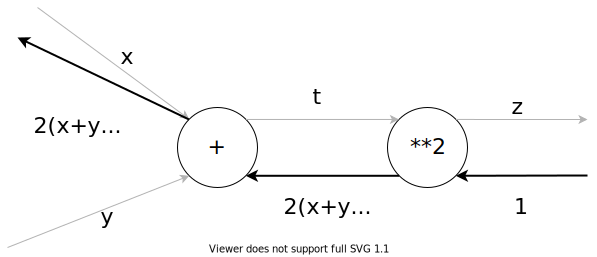

6.1. 連鎖律¶
簡単な問題は、計算グラフで解くことができる
計算グラフを左から右に進めることを 順伝播 (forward propagation) という
逆に、右から左に進めることを 逆伝播 (backward propagation) という
計算グラフは、一部の複雑な計算を省略した「局所的な計算」を表すことができる
6.1.1. 計算グラフの逆伝播¶
\(y = f(x)\)を計算グラフで表し、その逆伝播を見てみよう。
信号\(E\)を前のノードの結果として、\(f(x)\)を逆に辿る (つまり\(x\)として入った値)を知りたい場合、\(f(x)\)の微分を求める必要があります。
\(f(x)\)の微分は\(\frac{\partial y}{\partial x}\)と表すことができます。
さらに、前のノードに渡すために乗算をし、\(E \frac{\partial y}{\partial x}\) となります。
6.1.2. 連鎖律とは¶
\(z = (x + y)^2\)という式は、以下の2つの式であわらすことができます。
\[ \begin{align}\begin{aligned}\begin{split} z = t^2 \\
t = x + y\end{split}\\ある関数が合成関数で表される場合、その合成関数の微分は、合成関数を構成するそれぞれの関数の微分の積によって表すことができる。\end{aligned}\end{align} \]
合成関数は、複数の関数で構成された関数のことを指します。
\(x\)に関する\(z\)の微分は\(\frac{\partial z}{\partial x}\)、
\(t\)に関する\(z\)の微分は\(\frac{\partial z}{\partial t}\)、
\(x\)に関する\(t\)の微分は\(\frac{\partial x}{\partial t}\)とします。
\(z = (x + y)^2\)より:
\[\frac{\partial z}{\partial x} = \frac{\partial z}{\partial t}\frac{\partial t}{\partial x}\]
偏微分を求めます。
\[\frac{\partial z}{\partial t} = 2t\]
\[\frac{\partial t}{\partial x} = 1\]
\[\begin{split}\frac{\partial z}{\partial x} = 2t \cdot 1 \\
= 2(x + y)\end{split}\]
計算グラフで表すと以下になります:
